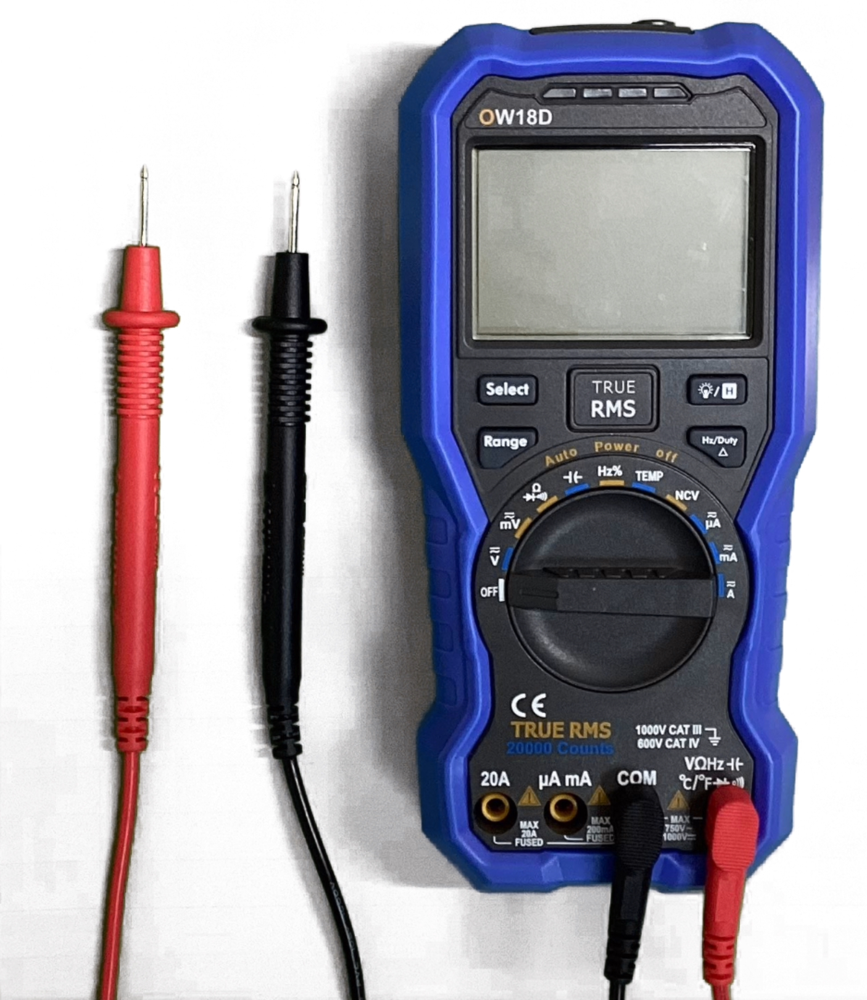

今回はOW18Dのレビューです。
ところで、OWONというメーカーはご存知でしょうか。
安い計測機を作っていることで有名なので、もしかしたら知っているかもしれません。
今回はそんなOWONのテスター(デジタルマルチメーター)のレビューです。
この製品は秋月電子さんで買ったものなので、購入リンクは省いておきます。

写真に映っているテストリードは付属のものです。
ケーブルはそこそこ柔らかくて、案外使いやすいというのが正直な感想です。
しかしグリップの部分が太くて、特にガード(つば)の部分が大きく、コンセントに差し込もうとすると横方でお互いに干渉します。
この太さは欠点です。
こういう欠点があるので、個人的にはHIOKI L9300なんかをおすすめします。
次にスペックに関してです。
画面は4･1/2表示(20000カウント)です。
もう少し5桁の表示を活用できるカウント数ならなお良かったと思います。
また、DCVの測定確度は1年以内±0.05%とそこそこ性能は高く、実使用で誤差を感じることはないと思います。
ロータリースイッチも快適に回せて、画面のコントラストも良く、ハード的に文句はほぼないです。
では、デメリットはと言われればソフト面にあります。
このテスターには相対値表示([△REL])機能がありますが、この実行中にはレンジが変更できません。
これが電圧レンジならまだしも、静電容量測定でも発生します。
通常、テスターでキャパシタンス(静電容量)を測定するとき、寄生容量をキャンセルするのですが、それができません。
厳密にいうと、最小レンジでしか機能しません。
なかなかな問題だと思います。
(海外のYouTuberもFlukeのテスターに対して
なんでこの安いテスターはできるのにバカ高いFlukeのはできないんだ！F**k！
と言っていましたね…笑)
とにかく、別にあえて買う価値はないかな、と思う感じのテスターでした。